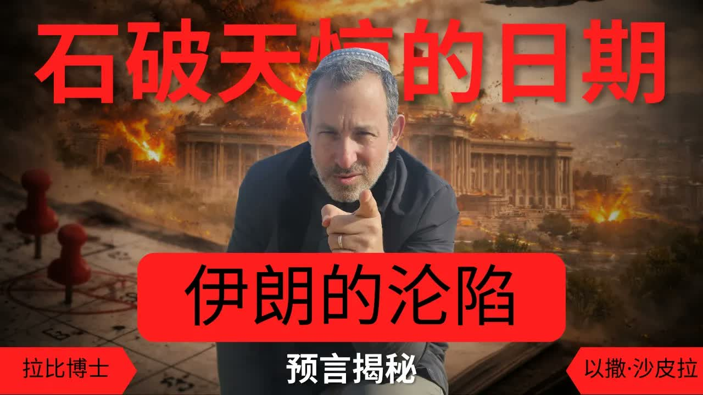

石破天驚的日期 ── 伊朗的沦陷與「三與三」的原則 An Earth-Shaking Date — Iran's Fall and the “Three and Three” Principle
沙皮拉拉比依據 Ra'ay HaMelech 與 Marit HaAyin 兩部古典拉比著作，提出一個極具份量的時間預測：亞瑪力——也就是今日的伊朗政權——將在逾越節前夕被剪除，而其後緊接而來的，是第三聖殿的重建與彌賽亞的降臨。 Drawing on the classical works Ra'ay HaMelech and Marit HaAyin, Rabbi Shapira lays out a date-loaded prediction: Amalek — today's Iranian regime — will be cut off on the eve of Pesach, and what follows immediately after is the rebuilding of the Third Temple and the coming of the Messiah.
「正如你們當年出埃及一樣，在最終的救贖中，我將向你們顯出奇妙的事。」(彌迦書 7:15)拉比沙皮拉以這節經文開場——它是猶太傳統理解末世的時間鑰匙：未來的救贖，將像出埃及一樣發生在「逾越節」(Pesach)。更具體地：根據 Ra'ay HaMelech 與 Marit HaAyin 的解經，「亞瑪力」(Amalek)——古今神所定的以色列死敵——將在逾越節前夕被剪除。在拉比沙皮拉的當代應用中：今天的「亞瑪力」就是伊朗政權及其代理人聯盟。他根據經文與拉比傳統結合，給出一個極具份量的判斷：這場戰爭不會持續六個月以上；伊朗政權的崩塌將在下一個逾越節前夕發生。 “As in the days when you came out of the land of Egypt, I will show them marvellous things.” (Micah 7:15) Rabbi Shapira opens with this verse — the Jewish tradition's chronological key for understanding the end. The future redemption will unfold, like the Exodus, on Pesach. More specifically: according to the classical works Ra'ay HaMelech and Marit HaAyin, “Amalek” — Israel's covenantally-appointed mortal enemy across the ages — will be cut off on the eve of Pesach. In Rabbi Shapira's contemporary application: today's “Amalek” is the Iranian regime and its proxy alliance. Combining biblical text with rabbinic tradition, he draws a heavy conclusion: this war will not last six more months; the regime's collapse will arrive on the eve of Passover.
一、拉比為什麼敢給出時間？I. Why Does the Rabbi Dare to Name a Time?
猶太傳統對「彌賽亞何時來」這個問題向來謹慎。塔木德 Sanhedrin 97b 甚至宣告：「那些計算彌賽亞末日的人有禍了。」拉比沙皮拉自己也承認這一點——他並非在做「預言占卜」，而是在核對拉比傳統中已有的時間印記。 Jewish tradition is famously cautious about “when the Messiah will come.” Talmud Sanhedrin 97b even declares: “Cursed be those who calculate the end.” Rabbi Shapira acknowledges this himself — he is not doing “prophecy divination.” He is checking the time-stamps already embedded in rabbinic tradition.
他的提問方式是這樣的：「拉比們在過去兩千年中，對『最終救贖將發生在哪個月份』有沒有給出明確的答案？」答案是：有，並且非常一致——在尼散月（Nisan），具體在逾越節前夕。 His question has a specific shape: “Have the rabbis, across two thousand years, given a clear answer to ‘in what month will the final redemption come’?” The answer is: yes — and remarkably consistently — in the month of Nisan, specifically on the eve of Pesach.
二、彌迦書 7:15 ── 「像出埃及一樣」II. Micah 7:15 — “As in the Days of the Exodus”
「正如你們當年出埃及一樣，在未來、在最終的救贖中，我將向你們顯出奇妙的事。」——彌迦書 7:15 “As in the days when you came out of the land of Egypt, I will show them marvellous things.”— Micah 7:15
彌迦書 7:15 是猶太末世論中極其重要的一節——它告訴我們：未來的救贖不是隨機發生，而是按出埃及的劇本重演。出埃及發生在尼散月十四日（逾越節）；十災以「擊殺長子」（Makkat Bechorot）為高潮——而擊殺長子，正是法老政權崩塌的那一夜。 Micah 7:15 is a crucial verse in Jewish eschatology — it tells us the future redemption is not random; it follows the Exodus script. The Exodus happened on the 14th of Nisan (Passover eve). The Ten Plagues climaxed with the slaying of the firstborn (Makkat Bechorot) — the night Pharaoh's regime collapsed.
如果未來的救贖「像出埃及一樣」，那麼今天的「法老政權」（伊朗）也將在同一個劇本的同一個夜晚崩塌——這就是拉比沙皮拉所要展開的論證。 If the future redemption is “as in the days of the Exodus,” then today's “Pharaoh regime” (Iran) will collapse on the same night of the same script — and that is the argument Rabbi Shapira is about to unfold.
三、尼散的奧秘 ── 「Nisan」就是「神蹟」III. The Secret of Nisan — The Word Itself Means “Miracle”
希伯來文「Nisan」(ניסן) 在字根上與 Nes（נס，「神蹟」）相連。「Nisan」這個月名本身就帶著「神蹟之月」的意涵。出埃及在這個月發生；逾越節在這個月慶祝；按拉比傳統，最終的救贖也將在這個月開始——並在這個月結束。 The Hebrew name Nisan (ניסן) shares its root with Nes (נס, “miracle”). The very name of the month carries the meaning “the month of miracles.” The Exodus happened in this month; Passover is celebrated in this month; according to rabbinic tradition the final redemption will both begin and end in this month.
拉比沙皮拉指出尼散月的另一個奧秘：在這個月，以色列的靈魂從 Klipot（קליפות，「邪惡的外殼」）中被拔出，進入聖潔。出埃及不只是身體的解放，更是靈魂從邪惡之殼中的釋放。 Rabbi Shapira points to another secret of Nisan: in this month, the soul of Israel is pulled out of the Klipot (קליפות, “evil shells”) and brought into holiness. The Exodus was not only the body's liberation; it was also the soul's release from evil's husks.
四、Ra'ay HaMelech 與 Marit HaAyin ── 逾越節前夕的剪除IV. Ra'ay HaMelech and Marit HaAyin — Cut Off on Pesach Eve
Ra'ay HaMelech（《王者之鏡》）與 Marit HaAyin（《眼之所見》）是兩部相對冷門但極具份量的拉比著作。它們對逾越節的解經中提出一個驚人的判斷：「亞瑪力」(Amalek) 的後裔將在逾越節前夕被剪除——這是出埃及第十災「擊殺長子」的末世重演。 Ra'ay HaMelech (“The Mirror of the King”) and Marit HaAyin (“What the Eye Sees”) are two relatively less-known but theologically weighty rabbinic works. In their interpretations of Passover they make a striking judgement: Amalek's descendants will be cut off on the eve of Pesach — this is the end-time recurrence of the tenth plague, the slaying of the firstborn.
為什麼是「逾越節前夕」？因為按希伯來文的時序，「夜晚」是日期的開始（創世記 1:5：「有晚上、有早晨，這是頭一日。」）。逾越節從尼散月十四日的夜晚開始；以色列被拯救的那一刻，正是這個夜晚。 Why the eve of Pesach? Because in Hebrew chronology, night begins the day (Genesis 1:5: “There was evening and there was morning — the first day.”). Pesach starts on the night of 14 Nisan; that is the very moment Israel was rescued.
五、「三與三」的原則 ── Marit HaAyin 的鑰匙V. The “Three and Three” Principle — Marit HaAyin's Key
Marit HaAyin 提出一個極具結構性的解經原則：救贖按「三與三」的次序展開——前三件事的功德為後三件事鋪路。 Marit HaAyin proposes a structurally elegant principle: redemption unfolds in two sequences of three — the merit of the first three opens the way for the latter three.
前三件：（1）逾越節——以色列靈魂的釋放；（2）剪除亞瑪力的後裔；（3）徹底根除亞瑪力。 First three: (1) Pesach — the freeing of Israel's soul; (2) cutting off Amalek's descendants; (3) the full eradication of Amalek.
後三件：（4）第三聖殿的建造；（5）以色列得贖罪與赦免；（6）餘民歸聚 + 彌賽亞降臨。 Latter three: (4) the building of the Third Temple; (5) Israel's atonement and forgiveness; (6) the gathering of the remnant + the coming of the Messiah.
拉比沙皮拉的應用：第一個三件正在我們眼前發生——逾越節（每年在尼散月應驗）、亞瑪力（伊朗）的後裔被剪除（過去兩年的真主黨、哈瑪斯領袖的相繼倒下）、亞瑪力本身的根除（伊朗政權的搖晃）。按 Marit HaAyin 的原則，第二個三件——第三聖殿、以色列的贖罪、彌賽亞——將緊接而來。 Rabbi Shapira's application: the first three are unfolding in front of us — Pesach (fulfilled every year in Nisan), the cutting off of Amalek's descendants (the falling of Hezbollah's and Hamas's leadership over the past two years), and the eradication of Amalek itself (the trembling of the Iranian regime). By the principle of Marit HaAyin, the second three — the Third Temple, Israel's atonement, and the Messiah — follow immediately.
六、亞達月的覺醒 ── 戰爭的開端對應拉比傳統VI. The Awakening of Adar — The War's Opening Matched the Rabbis' Calendar
猶太曆中亞達月（Adar）緊接尼散月之前。拉比傳統中有一句廣為人知的話：「進入亞達，喜樂就增加。」(Mishen'chnas Adar marbin b'simcha)亞達月與普珥節相連——以斯帖時代以色列在波斯轉危為安的記念。 In the Jewish calendar, the month of Adar comes immediately before Nisan. A famous rabbinic saying: “When Adar enters, joy is multiplied” (Mishen'chnas Adar marbin b'simcha). Adar contains Purim — the memorial of Israel's reversal of fortune in Persia during Esther's day.
拉比沙皮拉指出一個令人深思的對應：當前以色列與伊朗之間的這場戰爭，其關鍵階段恰好與亞達月開端同步——而拉比傳統正是把亞達月教導為「以色列靈魂大覺醒」的時刻。亞達覺醒、尼散得贖——這是一個古老的、現在又被打開的圖景。 Rabbi Shapira points to a sobering correspondence: the current war's pivotal phase opened in step with the start of Adar — and rabbinic tradition has long taught Adar as the moment of “Israel's great soul-awakening.” Awakening in Adar, redemption in Nisan — an ancient picture being reopened in our time.
七、第三聖殿 ── 「三與三」的下半場VII. The Third Temple — The Second Half of “Three and Three”
如果亞瑪力（伊朗政權）的崩塌是「三與三」的第三步，那麼按 Marit HaAyin 的原則，緊接其後的就是第三聖殿的建造。多位先知（以西結 40-48、撒迦利亞 14、以賽亞 2）都描寫了末世聖殿在耶路撒冷錫安山被建造的圖景。 If the collapse of Amalek (the Iranian regime) is the third step of the “three and three,” then by Marit HaAyin's principle, what comes immediately after is the building of the Third Temple. Multiple prophets (Ezekiel 40–48; Zechariah 14; Isaiah 2) describe the end-time Temple being built on Mount Zion.
對基督徒而言，第三聖殿的議題複雜而具爭議——一些末世論派別認為它將被「敵基督」褻瀆，另一些則認為它是彌賽亞自己會建造的（亞 6:12-13：「看那名稱為大衛苗裔的，他要在本處長起來，並要建造耶和華的殿」）。沙皮拉拉比明確採用後者的圖景。 For Christians, the Third Temple is theologically contested — some end-times schools say it will be defiled by the “antichrist,” others (Zech 6:12–13: “behold the man whose name is the Branch... He shall build the temple of the LORD”) hold that the Messiah Himself will build it. Rabbi Shapira clearly takes the latter view.
八、對基督徒的意義VIII. What This Means for Christians
第一，逾越節在基督徒中常被簡化為「最後晚餐的背景」。但拉比的這個解讀提醒我們：逾越節是末世論的中心節期。耶書亞自己選擇在逾越節捨命；末世的彌賽亞作為（按拉比傳統）也將在逾越節前夕展開。逾越節是頭一次救贖與最終救贖共同的節期。 First, Christians often reduce Passover to “the backdrop of the Last Supper.” The rabbi's reading reminds us: Pesach is the central feast of eschatology. Yeshua chose to lay down His life on Passover; the end-time Messianic action (in rabbinic tradition) also opens on Passover eve. Pesach is the shared feast of the first redemption and the final redemption.
第二，「三與三」的原則給我們一個禱告的清晰結構：當我們看到亞瑪力（邪惡勢力）逐步崩塌時，我們應當為聖殿的重建、以色列的贖罪、餘民的歸聚、彌賽亞的回來禱告。前三件是神在做的「拆」，後三件是神要做的「建」。 Second, the “three and three” principle gives us a clear structure for prayer: when we see Amalek (evil powers) progressively collapsing, we should be praying for the rebuilding of the Temple, Israel's atonement, the gathering of the remnant, and the return of the Messiah. The first three are God's “tearing down”; the latter three are God's “building up.”
第三，拉比所給的具體時間預測（「逾越節前夕」）我們應當以謙卑的態度對待——既不照單全收，也不嗤之以鼻。如果它應驗了，我們會看見神的信實；如果尚未，我們繼續等候、繼續禱告。聖經的態度始終是：「那日子那時辰，沒有人知道。」(太 24:36) Third, the specific date prediction (“Pesach eve”) we should hold with humility — neither swallowing it whole nor dismissing it. If it comes to pass, we will see God's faithfulness. If not, we continue to wait and pray. Scripture's posture remains: “of that day and hour no one knows.” (Matt 24:36)
九、關於分辨IX. A Word on Discernment
拉比沙皮拉的時間預測（「不會超過六個月」、「在逾越節前夕」）是一個應用層面的判斷，建立在 Ra'ay HaMelech、Marit HaAyin 等較冷門的拉比著作之上。這些著作本身有解經權威，但把今日地緣政治套到它們的時間表上是拉比個人的判斷，不應被讀為「神親自設定的日曆」。 Rabbi Shapira's date predictions (“no more than six months,” “on the eve of Pesach”) are applied judgements, built on the lesser-known Ra'ay HaMelech and Marit HaAyin. Those works have interpretive authority, but mapping today's geopolitics onto their timetables is the rabbi's own judgement — not “a calendar set by God Himself.”
話雖如此，「救贖將以出埃及為原型重演」這個更大的格局，是先知書本身（彌迦、以賽亞、撒迦利亞）反覆教導的，並非穿鑿。我們對具體日期保留謙卑，但對這個更大的圖景，可以滿懷盼望。 That said, the larger pattern — the redemption will replay according to the Exodus template — is taught by the prophets themselves (Micah, Isaiah, Zechariah) over and over, not strained. Hold the specific date in humility; hold the larger picture in hope.
十、結語 ── 為「三與三」禱告X. Closing — Pray the “Three and Three”
「願亞瑪力被剪除。願第三聖殿被建造。願以色列得赦免。願餘民歸聚。願彌賽亞速速回來。Am Yisrael Chai。」 “May Amalek be cut off. May the Third Temple be built. May Israel be forgiven. May the remnant be gathered. May the Messiah return soon. Am Yisrael Chai.”